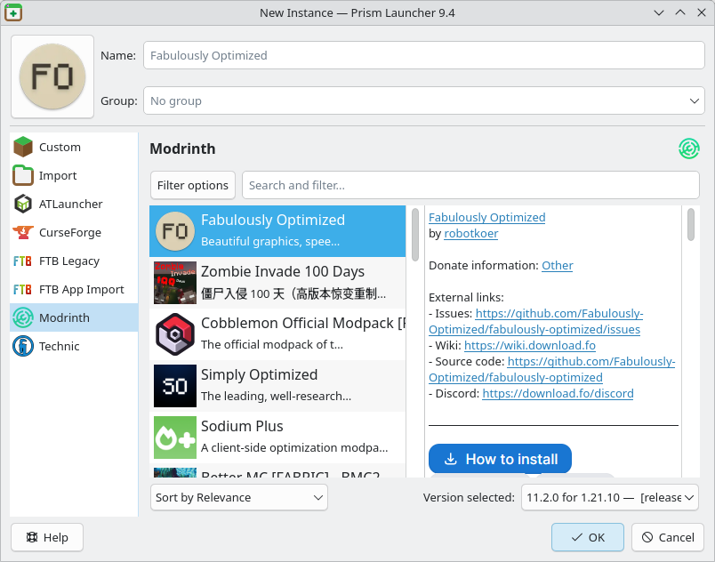
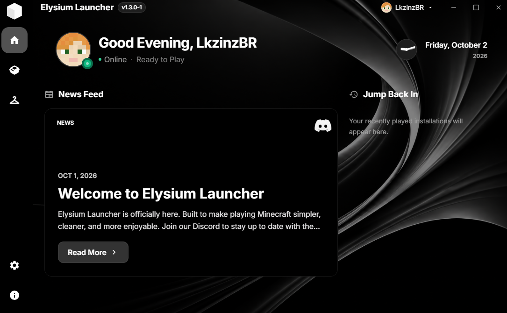
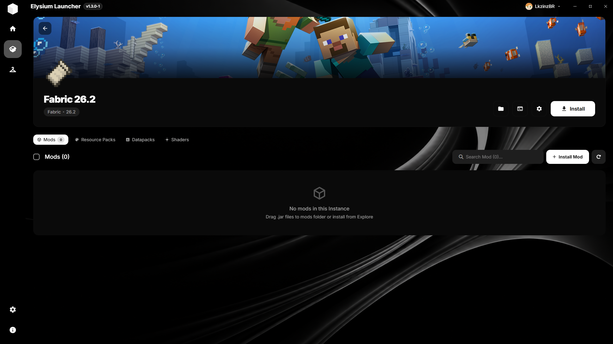
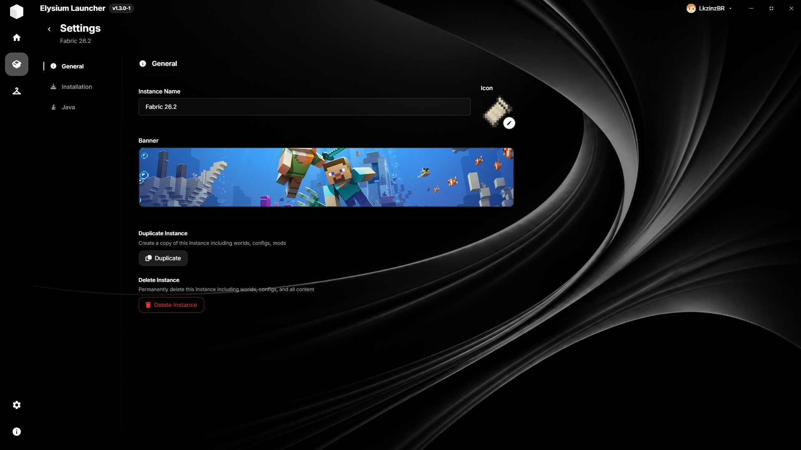

Elysium Launcher
A Minecraft launcher designed to let you make the game your own. Manage your accounts, versions, and instances within a clean interface designed to keep everything simple.


Features
Home Management
Elysium Launcher provides a simple and organized home screen where you can quickly access your Minecraft instances, manage your installations, and keep everything you need in one place. From the home screen, you can easily navigate between your instances and access the main features of the launcher.


Instance Management
Elysium Launcher keeps your Minecraft installations organized as separate instances. Each instance can have its own version, mods, resource packs, shaders, settings, and other configurations, allowing you to manage and switch between different Minecraft setups with ease.
Instance Configuration
Elysium Launcher gives you full control over each Minecraft instance, allowing you to customize its version, mods, resource packs, shaders, settings, and other configurations. Each instance can be configured independently, giving you the freedom to create the exact setup you want.

Instance Customization
Elysium Launcher gives you complete control over how each Minecraft instance looks and works. Customize your instances with different settings, mods, resource packs, shaders, and other options to create the setup that fits exactly how you want to play.

I want that!
You can install Prism Launcher on Windows, MacOS, and Linux. See the Download page for more information. You can also find community packages there.
Get Involved
Elysium Launcher is an Free Launcher and we welcome contributions from the community.
We also thank many wonderful companies who help us keep the lights on.


Other Information
Elysium Launcher's logo and related assets are licensed under CC BY-SA 4.0.
This website is powered by Visual Studio Code .